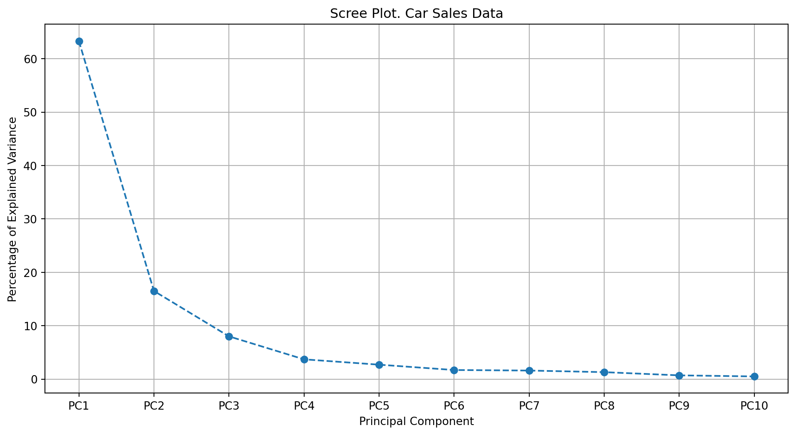
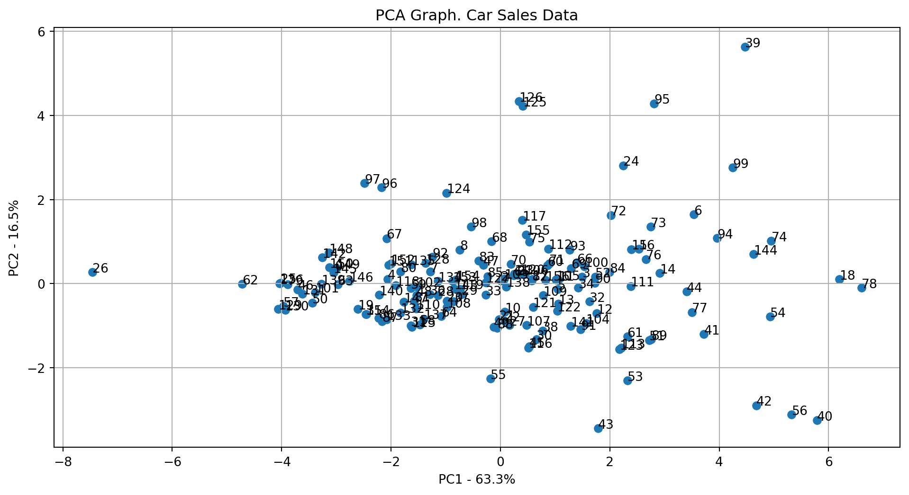
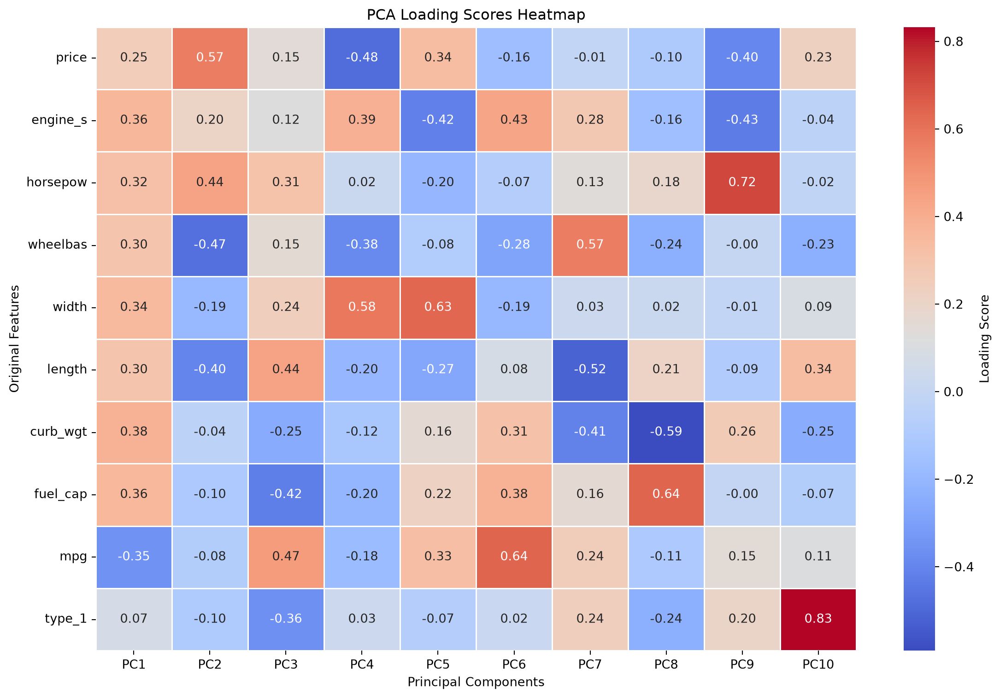
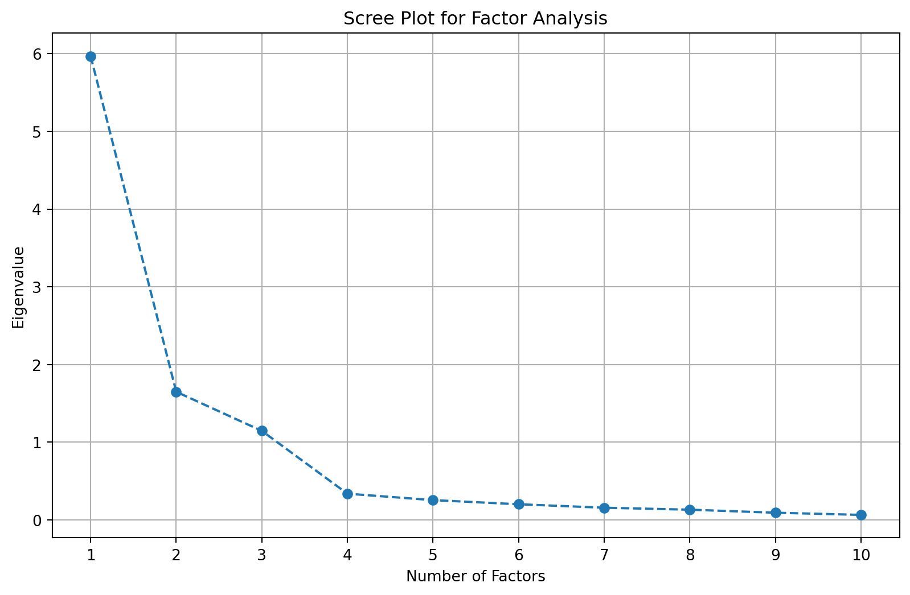
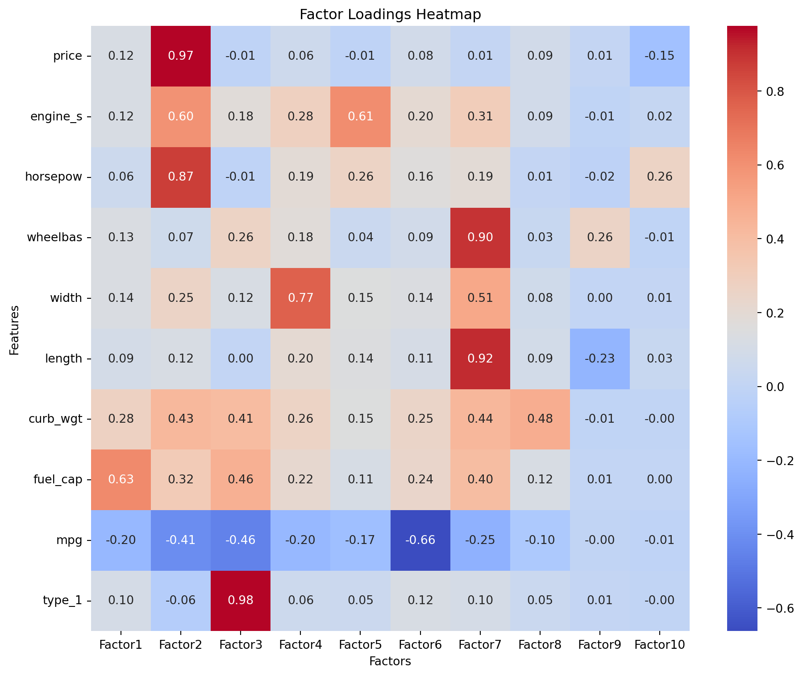

import pandas as pd
import numpy as np
import statsmodels.api as sm
from sklearn.preprocessing import StandardScaler, OneHotEncoder
from spotoptim.factor_analyzer import FactorAnalyzer
from spotoptim.factor_analyzer import calculate_kmo
from sklearn.metrics import mean_squared_error, r2_score
from sklearn.decomposition import PCA
import matplotlib.pyplot as plt
import seaborn as sns
from sklearn.model_selection import train_test_split
import copy
from spotoptim.utils.stats import condition_index
from spotoptim.utils.pca import (get_pca, plot_pca_scree, plot_pca1vs2, get_pca_topk, get_loading_scores, plot_loading_scores)47 Addressing Multicollinearity: Principle Component Analysis (PCA) and Factor Analysis (FA)
47.1 Introduction
The concepts of Principal Component Analysis (PCA) and Factor Analysis (FA) are both dimensionality reduction techniques. They operate on different assumptions and serve distinct purposes. PCA aims to transform correlated variables into a smaller set of uncorrelated principal components that capture maximum variance, whereas Factor Analysis seeks to explain the correlations between observed variables in terms of a smaller number of unobserved, underlying factors.
After loading and preprocessing the data in Section 47.2, we will explore these methods to reduce dimensions and address multicollinearity. In Section 47.3 we will conduct linear regression on the extracted components or factors. Section 47.4 provides diagnostics for multicollinearity, including the coefficient table, eigenvalues, condition indices, and the KMO measure. Section 47.5 explains how PCA is applied to the data, while Section 47.6 discusses Factor Analysis. Both methods are used to mitigate multicollinearity issues in regression models. Section 47.8 shows how the reduced dimensions can be used in other machine learning models, such as Random Forests.
The following packages are used in this chapter:
47.2 The Car-Sales Data Set
First, the data is preprocessed to ensure that it does not contain any NaN or infinite values. We load the data set, which contains information about car sales, including various features such as price, engine size, horsepower, and more. The initial shape of the DataFrame is (157, 27).
df = pd.read_csv("data/car_sales.csv", encoding="utf-8", index_col=None)
print(df.shape)
df.head()(157, 27)| Unnamed: 0 | manufact | model | sales | resale | type | price | engine_s | horsepow | wheelbas | ... | ztype | zprice | zengine_ | zhorsepo | zwheelba | zwidth | zlength | zcurb_wg | zfuel_ca | zmpg | |
|---|---|---|---|---|---|---|---|---|---|---|---|---|---|---|---|---|---|---|---|---|---|
| 0 | 1 | Acura | Integra | 16.919 | 16.360 | 0 | 21.50 | 1.8 | 140.0 | 101.2 | ... | -0.592619 | -0.410458 | -1.207001 | -0.810378 | -0.822789 | -1.115337 | -1.112557 | -1.172124 | -1.222227 | 0.970527 |
| 1 | 2 | Acura | TL | 39.384 | 19.875 | 0 | 28.40 | 3.2 | 225.0 | 108.1 | ... | -0.592619 | 0.070323 | 0.133157 | 0.688731 | 0.080198 | -0.246243 | 0.413677 | 0.220418 | -0.193400 | 0.270037 |
| 2 | 3 | Acura | CL | 14.114 | 18.225 | 0 | NaN | 3.2 | 225.0 | 106.9 | ... | -0.592619 | NaN | 0.133157 | 0.688731 | -0.076843 | -0.159334 | 0.346672 | 0.145875 | -0.193400 | 0.503534 |
| 3 | 4 | Acura | RL | 8.588 | 29.725 | 0 | 42.00 | 3.5 | 210.0 | 114.6 | ... | -0.592619 | 1.017949 | 0.420333 | 0.424182 | 0.930839 | 0.072424 | 0.689144 | 0.748569 | 0.012366 | -0.430452 |
| 4 | 5 | Audi | A4 | 20.397 | 22.255 | 0 | 23.99 | 1.8 | 150.0 | 102.6 | ... | -0.592619 | -0.236959 | -1.207001 | -0.634013 | -0.639574 | -0.854609 | -0.695634 | -0.602736 | -0.399165 | 0.737030 |
5 rows × 27 columns
The first column is removed as it’s an index or non-informative column.
df = df.drop(df.columns[0], axis=1)
df.head()| manufact | model | sales | resale | type | price | engine_s | horsepow | wheelbas | width | ... | ztype | zprice | zengine_ | zhorsepo | zwheelba | zwidth | zlength | zcurb_wg | zfuel_ca | zmpg | |
|---|---|---|---|---|---|---|---|---|---|---|---|---|---|---|---|---|---|---|---|---|---|
| 0 | Acura | Integra | 16.919 | 16.360 | 0 | 21.50 | 1.8 | 140.0 | 101.2 | 67.3 | ... | -0.592619 | -0.410458 | -1.207001 | -0.810378 | -0.822789 | -1.115337 | -1.112557 | -1.172124 | -1.222227 | 0.970527 |
| 1 | Acura | TL | 39.384 | 19.875 | 0 | 28.40 | 3.2 | 225.0 | 108.1 | 70.3 | ... | -0.592619 | 0.070323 | 0.133157 | 0.688731 | 0.080198 | -0.246243 | 0.413677 | 0.220418 | -0.193400 | 0.270037 |
| 2 | Acura | CL | 14.114 | 18.225 | 0 | NaN | 3.2 | 225.0 | 106.9 | 70.6 | ... | -0.592619 | NaN | 0.133157 | 0.688731 | -0.076843 | -0.159334 | 0.346672 | 0.145875 | -0.193400 | 0.503534 |
| 3 | Acura | RL | 8.588 | 29.725 | 0 | 42.00 | 3.5 | 210.0 | 114.6 | 71.4 | ... | -0.592619 | 1.017949 | 0.420333 | 0.424182 | 0.930839 | 0.072424 | 0.689144 | 0.748569 | 0.012366 | -0.430452 |
| 4 | Audi | A4 | 20.397 | 22.255 | 0 | 23.99 | 1.8 | 150.0 | 102.6 | 68.2 | ... | -0.592619 | -0.236959 | -1.207001 | -0.634013 | -0.639574 | -0.854609 | -0.695634 | -0.602736 | -0.399165 | 0.737030 |
5 rows × 26 columns
47.2.1 The Target Variable
The sales variable, which is our target, is transformed to a log scale. Missing or zero values are handled by replacing them with the median.
df['ln_sales'] = np.log(df['sales'].replace(0, np.nan))
if df['ln_sales'].isnull().any() or np.isinf(df['ln_sales']).any():
df['ln_sales'] = df['ln_sales'].fillna(df['ln_sales'].median()) # Or any other strategy
y = df['ln_sales']47.2.2 The Features
47.2.2.1 Numerical Features
The following steps are performed during data preprocessing for numerical features:
- Check for NaN or infinite values in X.
- Replace NaN and infinite values with the median of the respective column.
- Remove constant or nearly constant columns (not explicitly shown in code but stated in preprocessing steps).
- Standardize the numerical predictors in X using StandardScaler.
- Verify that X_scaled does not contain any NaN or infinite values.
# Use columns from 'price' to 'mpg' as predictors
independent_var_columns = ['price', 'engine_s', 'horsepow', 'wheelbas',
'width', 'length', 'curb_wgt', 'fuel_cap', 'mpg']
# Select those columns, ensuring they are numeric
X = df[independent_var_columns].apply(pd.to_numeric, errors='coerce')
# Handle missing/nans in features by using an appropriate imputation strategy
X = X.fillna(X.median()) # Impute with median or any other appropriate strategy
# Display the first few rows of the features
X.head()| price | engine_s | horsepow | wheelbas | width | length | curb_wgt | fuel_cap | mpg | |
|---|---|---|---|---|---|---|---|---|---|
| 0 | 21.500 | 1.8 | 140.0 | 101.2 | 67.3 | 172.4 | 2.639 | 13.2 | 28.0 |
| 1 | 28.400 | 3.2 | 225.0 | 108.1 | 70.3 | 192.9 | 3.517 | 17.2 | 25.0 |
| 2 | 22.799 | 3.2 | 225.0 | 106.9 | 70.6 | 192.0 | 3.470 | 17.2 | 26.0 |
| 3 | 42.000 | 3.5 | 210.0 | 114.6 | 71.4 | 196.6 | 3.850 | 18.0 | 22.0 |
| 4 | 23.990 | 1.8 | 150.0 | 102.6 | 68.2 | 178.0 | 2.998 | 16.4 | 27.0 |
if X.isnull().any().any():
print("NaNs detected in X. Filling with column medians.")
X = X.fillna(X.median())
scaler = StandardScaler()
X_scaled = scaler.fit_transform(X)
if np.isnan(X_scaled).any() or np.isinf(X_scaled).any():
raise ValueError("X_scaled contains NaN or infinite values after preprocessing.")
# Convert the scaled data back to a DataFrame
X_scaled = pd.DataFrame(X_scaled, columns=X.columns)
# Display the first few rows of the scaled features
X_scaled.head()| price | engine_s | horsepow | wheelbas | width | length | curb_wgt | fuel_cap | mpg | |
|---|---|---|---|---|---|---|---|---|---|
| 0 | -0.410053 | -1.214376 | -0.814577 | -0.827661 | -1.121287 | -1.119971 | -1.182726 | -1.228700 | 0.982411 |
| 1 | 0.075070 | 0.134385 | 0.694066 | 0.081122 | -0.246689 | 0.416070 | 0.223285 | -0.193381 | 0.272833 |
| 2 | -0.318723 | 0.134385 | 0.694066 | -0.076927 | -0.159229 | 0.348634 | 0.148020 | -0.193381 | 0.509359 |
| 3 | 1.031255 | 0.423406 | 0.427835 | 0.937221 | 0.073997 | 0.693306 | 0.756545 | 0.013683 | -0.436744 |
| 4 | -0.234987 | -1.214376 | -0.637089 | -0.643270 | -0.858907 | -0.700370 | -0.607830 | -0.400444 | 0.745885 |
47.2.2.2 Categorical Features
Categorical features (like ‘type’) are one-hot encoded and then combined with the scaled numerical features.
categorical_cols = ['type'] # Replace if more categorical variables exist
encoder = OneHotEncoder(drop='first', sparse_output=False)
X_categorical_encoded = encoder.fit_transform(df[categorical_cols])
# Convert encoded data into a DataFrame
X_categorical_encoded_df = pd.DataFrame(X_categorical_encoded,
columns=encoder.get_feature_names_out(categorical_cols))
X_categorical_encoded_df.describe(include='all')| type_1 | |
|---|---|
| count | 157.000000 |
| mean | 0.261146 |
| std | 0.440665 |
| min | 0.000000 |
| 25% | 0.000000 |
| 50% | 0.000000 |
| 75% | 1.000000 |
| max | 1.000000 |
47.2.3 Combining Non-categorical and Categorical (encoded) Data
The final feature set X_encoded is created by concatenating the scaled numerical features and the one-hot encoded categorical features. This combined DataFrame will be used for regression analysis.
X_encoded = pd.concat([X_scaled, X_categorical_encoded_df], axis=1)
print(f"Dimension: {X_encoded.shape}")
print(list(X_encoded.columns))Dimension: (157, 10)
['price', 'engine_s', 'horsepow', 'wheelbas', 'width', 'length', 'curb_wgt', 'fuel_cap', 'mpg', 'type_1']X_encoded.describe(include='all')| price | engine_s | horsepow | wheelbas | width | length | curb_wgt | fuel_cap | mpg | type_1 | |
|---|---|---|---|---|---|---|---|---|---|---|
| count | 1.570000e+02 | 1.570000e+02 | 1.570000e+02 | 1.570000e+02 | 1.570000e+02 | 1.570000e+02 | 1.570000e+02 | 1.570000e+02 | 1.570000e+02 | 157.000000 |
| mean | -5.091469e-16 | 1.018294e-16 | 1.584012e-16 | 3.892145e-15 | -2.489162e-16 | -1.584012e-16 | -2.941737e-16 | 5.657187e-17 | 1.980016e-17 | 0.261146 |
| std | 1.003200e+00 | 1.003200e+00 | 1.003200e+00 | 1.003200e+00 | 1.003200e+00 | 1.003200e+00 | 1.003200e+00 | 1.003200e+00 | 1.003200e+00 | 0.440665 |
| min | -1.272376e+00 | -1.985097e+00 | -2.323220e+00 | -1.960346e+00 | -2.491490e+00 | -2.843334e+00 | -2.374152e+00 | -1.979307e+00 | -2.092426e+00 | 0.000000 |
| 25% | -6.459349e-01 | -7.326758e-01 | -6.370894e-01 | -5.905870e-01 | -8.006008e-01 | -7.303412e-01 | -6.446622e-01 | -5.557424e-01 | -6.732705e-01 | 0.000000 |
| 50% | -3.187230e-01 | -5.829498e-02 | -1.489990e-01 | -6.375655e-02 | -1.738055e-01 | 4.142561e-02 | -5.695606e-02 | -1.933806e-01 | 3.630749e-02 | 0.000000 |
| 75% | 3.232563e-01 | 4.234056e-01 | 5.165788e-01 | 6.211231e-01 | 6.570627e-01 | 6.558419e-01 | 6.412452e-01 | 4.019282e-01 | 5.093595e-01 | 1.000000 |
| max | 4.089638e+00 | 4.758711e+00 | 4.687533e+00 | 4.111375e+00 | 2.552025e+00 | 2.783820e+00 | 3.514119e+00 | 3.637302e+00 | 5.003353e+00 | 1.000000 |
47.3 Fit the Linear Regression Model
An Ordinary Least Squares (OLS) regression model is fitted using the preprocessed and combined features (X_encoded).
X_encoded_with_const = sm.add_constant(X_encoded) # Adds a constant term (intercept) to the model
model = sm.OLS(df['ln_sales'], X_encoded_with_const).fit()47.3.1 Model Summary and Interpretation
47.3.1.1 Model Summary (ANOVA Table)
The ANOVA table shows a significant F-value (Prob (F-statistic) close to zero), indicating that the model is statistically significant and better than simply estimating the mean. The Adj. R-squared value, close to 0.40, suggests that nearly 40% of the variation in ln_sales is explained by the model.
print(model.summary()) OLS Regression Results
==============================================================================
Dep. Variable: ln_sales R-squared: 0.485
Model: OLS Adj. R-squared: 0.449
Method: Least Squares F-statistic: 13.73
Date: Mon, 02 Mar 2026 Prob (F-statistic): 7.69e-17
Time: 21:57:21 Log-Likelihood: -213.62
No. Observations: 157 AIC: 449.2
Df Residuals: 146 BIC: 482.9
Df Model: 10
Covariance Type: nonrobust
==============================================================================
coef std err t P>|t| [0.025 0.975]
------------------------------------------------------------------------------
const 3.0678 0.114 26.962 0.000 2.843 3.293
price -0.6451 0.177 -3.655 0.000 -0.994 -0.296
engine_s 0.3557 0.192 1.854 0.066 -0.023 0.735
horsepow -0.1364 0.229 -0.596 0.552 -0.589 0.316
wheelbas 0.3166 0.174 1.816 0.071 -0.028 0.661
width -0.0763 0.140 -0.547 0.586 -0.352 0.200
length 0.2029 0.185 1.099 0.273 -0.162 0.568
curb_wgt 0.0842 0.211 0.399 0.691 -0.333 0.501
fuel_cap -0.2284 0.179 -1.276 0.204 -0.582 0.125
mpg 0.3232 0.167 1.941 0.054 -0.006 0.652
type_1 0.8735 0.317 2.756 0.007 0.247 1.500
==============================================================================
Omnibus: 41.296 Durbin-Watson: 1.423
Prob(Omnibus): 0.000 Jarque-Bera (JB): 107.145
Skew: -1.064 Prob(JB): 5.42e-24
Kurtosis: 6.442 Cond. No. 11.4
==============================================================================
Notes:
[1] Standard Errors assume that the covariance matrix of the errors is correctly specified.Despite the positive model fit, many predictors show non-significant coefficients (P>|t| much larger than 0.05), suggesting they contribute little to the model.
47.4 Collinearity Diagnostics
47.4.1 The Coefficient Table
The coefficient table provides further evidence of multicollinearity. The function compute_coefficients_table() from the spotoptim package is used here for comprehensive diagnostics.
from spotoptim.utils.stats import compute_coefficients_table
coeffs_table = compute_coefficients_table(
model=model, X_encoded=X_encoded_with_const, y=y, vif_table=None
)
print("\nCoefficients Table:")
print(coeffs_table)
Coefficients Table:
Variable Zero-Order r Partial r Semipartial r Tolerance VIF
0 price -0.551325 -0.289521 -0.217155 0.195662 5.110865
1 engine_s -0.139066 0.151682 0.110172 0.165615 6.038084
2 horsepow -0.386896 -0.049229 -0.035386 0.116244 8.602562
3 wheelbas 0.292461 0.148618 0.107895 0.200566 4.985881
4 width 0.040572 -0.045185 -0.032473 0.312675 3.198207
5 length 0.216882 0.090597 0.065310 0.178835 5.591740
6 curb_wgt -0.040042 0.032981 0.023691 0.136742 7.313045
7 fuel_cap -0.017278 -0.105041 -0.075831 0.190355 5.253349
8 mpg 0.119998 0.158587 0.115313 0.219810 4.549388
9 type_1 0.273500 0.222382 0.163754 0.314477 3.179880For most predictors, the partial correlations (Partial r) decrease significantly compared to the zero-order correlations (Zero-Order r), which suggests multicollinearity. Tolerance values (1 minus the proportion of variance explained by other predictors) are low, indicating that approximately 70%-90% of a given predictor’s variance can be explained by other predictors. Tolerances close to 0 signify high multicollinearity. A Variance Inflation Factor (VIF) greater than 2 is typically considered problematic, and in this table, the smallest VIF is already greater than 2, confirming serious multicollinearity.
47.4.2 Eigenvalues and Condition Indices
Eigenvalues indicate how many factors or components can be meaningfully extracted. An eigenvalue greater than 1 suggests that the factor/component explains more variance than a single variable.
47.4.2.1 Eigenvalues
We use the FactorAnalyzer function from the factor_analyzer package to compute eigenvalues.
fa_temp = FactorAnalyzer(n_factors=X_encoded.shape[1], method="principal", rotation=None)
try:
fa_temp.fit(X_encoded)
ev, _ = fa_temp.get_eigenvalues()
ev = np.sort(ev) # The source prints in ascending order
print("Eigenvalues for each component:\n", ev)
except Exception as e:
print(f"Error during factor analysis fitting: {e}")
print("Consider reducing multicollinearity or removing problematic features.")Eigenvalues for each component:
[0.06453844 0.09238346 0.13143422 0.15658714 0.20129034 0.25457714
0.33712112 1.14556836 1.64880929 5.96769049]The eigenvalue-based diagnostics confirm severe multicollinearity. Several eigenvalues are close to 0, indicating strong correlations among predictors.
47.4.2.2 Condition Indices
From spotoptim.utils.stats, we can compute the condition index, which is a measure of multicollinearity. A condition index greater than 15 suggests potential multicollinearity issues, and values above 30 indicate severe problems.
Condition indices, calculated as the square roots of the ratios of the largest eigenvalue to each subsequent eigenvalue, also highlight the issue.
Definition 47.1 (Condition Index) The Condition Index (\(CI_i\)) for the \(i\)-th eigenvalue is defined as: \[ \text{CI}_i = \sqrt{\frac{\lambda{\max}}{\lambda_i}}, \] where \(\lambda_{\max}\) is the largest eigenvalue of the scaled predictor correlation matrix, and \(\lambda_i\) is the \(i\)-th eigenvalue of the same matrix.
\(CI_i\)-values greater than 15 suggest a potential problem, and values over 30 indicate a severe problem.
X_cond = copy.deepcopy(X_encoded)
condition_index_df = condition_index(X_cond)
print("\nCondition Index:")
print(condition_index_df)
Condition Index:
Index Eigenvalue Condition Index
0 0 0.047116 11.150268
1 1 0.067199 9.336595
2 2 0.121066 6.955955
3 3 0.146634 6.320499
4 4 0.157663 6.095428
5 5 0.248119 4.858905
6 6 0.338187 4.161884
7 7 0.736900 2.819449
8 8 1.531162 1.955951
9 9 5.857833 1.00000047.4.3 Kayser-Meyer-Olkin (KMO) Measure
The KMO (Kaiser-Meyer-Olkin) measure is a metric for assessing the suitability of data for Factor Analysis. A KMO value of 0.6 or higher is generally considered acceptable, while a value below 0.5 indicates that the data is not suitable for Factor Analysis.
The KMO measure is based on the correlation and partial correlation between variables. It is calculated as the ratio of the squared sums of correlations to the squared sums of correlations plus the squared sums of partial correlations. KMO values range between 0 and 1, where values close to 1 suggest strong correlations and suitability for Factor Analysis, and values close to 0 indicate weak correlations and unsuitability.
kmo_all, kmo_model = calculate_kmo(X_encoded)
print(f"\nKMO measure: {kmo_model:.3f} (0.6+ is often considered acceptable)")
KMO measure: 0.835 (0.6+ is often considered acceptable)A KMO measure of 0.835 indicates that the data is well-suited for Factor Analysis.
47.5 Addressing Multicollinearity with Principal Component Analysis (PCA)
Definition 47.2 (Multicollinearity and Multicorrelation) Multicorrelation is a general term that describes correlation between multiple variables. Multicollinearity is a specific problem in regression models caused by strong correlations between independent variables, making model interpretation difficult.
47.5.1 Introduction to PCA
Principal Component Analysis (PCA) is a popular unsupervised dimensionality reduction technique. It transforms a set of possibly correlated variables into a set of linearly uncorrelated variables called principal components. The first principal component accounts for as much of the variability in the data as possible, and each succeeding component accounts for as much of the remaining variability as possible. PCA is primarily used for data compression and simplifying complex datasets.
47.5.2 Application of PCA in Regression Problems:
- Dimensionality Reduction: PCA reduces the number of explanatory variables by transforming original variables into a smaller set of uncorrelated principal components, making regression algorithms less prone to overfitting, especially with many features.
- Reducing Multicollinearity: PCA effectively eliminates multicollinearity in linear regression models because the resulting principal components are orthogonal (uncorrelated) to each other, leading to more stable coefficient estimates.
- Handling High-Dimensional Data: It can reduce the dimensions of datasets with many variables to a manageable level before regression.
- Reduced Overfitting Tendencies: By removing redundant and highly correlated variables, PCA helps reduce the risk of overfitting by focusing the model on the most influential features.
- Improved Model Performance: Performing regression on the most important principal components often leads to better generalization and improved model performance on new data.
- Interpretation of Feature Importance: PCA provides insights into the importance of original features through the variance explained by each principal component, which can identify combinations of variables best representing the data.
47.5.3 Scree Plot
Definition 47.3 (Scree Plot) A scree plot is a graphical representation of the eigenvalues of a covariance or correlation matrix in descending order. It is used to determine the number of significant components or factors in dimensionality reduction techniques.
Mathematically, the eigenvalues \(\lambda_1, \lambda_2, \dots, \lambda_p\) are plotted against their corresponding component or factor indices \(i = 1, 2, \dots, p\), where \(p\) is the total number of components or factors.
The eigenvalues are defined as:
\[ \lambda_i = \text{Var}(\mathbf{z}_i), \]
where \(\mathbf{z}_i\) is the \(i\)-th principal component or factor, and \(\text{Var}(\mathbf{z}_i)\) is its variance.
The scree plot is constructed by plotting the points \((i, \lambda_i)\) for \(i = 1, 2, \dots, p\). The “elbow” in the plot, where the eigenvalues start to level off, indicates the optimal number of components or factors to retain.
47.5.4 Loading Scores (for PCA)
Loading scores in the context of Principal Component Analysis (PCA) represent the correlation or relationship between the original variables and the principal components.
Definition 47.4 (Loading Scores) The loading score for the \(j\)-th variable on the \(i\)-th principal component is defined as:
\[ L_{ij} = \mathbf{a}_i^\top \mathbf{x}_j, \]
where:
\(\mathbf{a}_i\) is the eigenvector corresponding to the \(i\)-th principal component, \(\mathbf{x}_j\) is the standardized value of the \(j\)-th variable.
In PCA, the loading scores indicate how much each original variable contributes to a given principal component. High absolute values of \(L_{ij}\) suggest that the \(j\)-th variable strongly influences the \(i\)-th principal component. In PCA, loading scores can be viewed as directional vectors in the feature space. The magnitude of the score indicates how dominant the variable is in a component, while the sign represents the direction of the relationship. A high positive loading means a positive influence and correlation with the component, and a high negative loading indicates a negative correlation. Loading score values also show how much each original variable contributes to the explained variance in its respective principal component.
NoteSummary of Loading Scores
Loading scores are used in Principal Component Analysis (PCA).
- Definition: Loading scores represent the correlation or relationship between the original variables and the principal components.
- Purpose: They indicate how much each original variable contributes to a given principal component.
- Mathematical Representation: In PCA, the loading scores are the elements of the eigenvectors of the covariance (or correlation) matrix, scaled by the square root of the corresponding eigenvalues.
- Interpretation: High absolute values of loading scores suggest that the variable strongly influences the corresponding principal component.
Section 47.7.3 explains the difference between loading scores in PCA and factor loadings in FA.
47.5.5 PCA for Car Sales Example
47.5.5.1 Computing the Principal Components
The Principal Component Analysis (PCA) is applied only to the features (X_encoded), not to the target variable. We will use functions from spotoptim.utils.pca, which are based on sklearn.decomposition.PCA to perform PCA.
Step 1: Perform PCA and scale the data
pca, scaled_data, feature_names, sample_names, df_pca_components = get_pca(df=X_encoded, n_components=10)Step 2: Plot the scree plot
plot_pca_scree(pca, df_name="Car Sales Data", max_scree=10)
Step 3: Plot the first two principal components
plot_pca1vs2(pca, df_pca_components, df_name="Car Sales Data")
Step 4: Get the top k features influencing PC1 and PC2
top_k_features_pc1, top_k_features_pc2 = get_pca_topk(pca, feature_names, k=10)
print("Top 10 features influencing PC1:", top_k_features_pc1)
print("Top 10 features influencing PC2:", top_k_features_pc2)Top 10 features influencing PC1: ['curb_wgt', 'engine_s', 'fuel_cap', 'mpg', 'width', 'horsepow', 'length', 'wheelbas', 'price', 'type_1']
Top 10 features influencing PC2: ['price', 'wheelbas', 'horsepow', 'length', 'engine_s', 'width', 'fuel_cap', 'type_1', 'mpg', 'curb_wgt']47.5.5.2 Loading Scores for PCA (10 Components)
# Get and print loading scores
loading_scores_df = get_loading_scores(pca, X_encoded.columns)
print("PCA Loading Scores (10 Components):\n", loading_scores_df)PCA Loading Scores (10 Components):
PC1 PC2 PC3 PC4 PC5 PC6 \
price 0.251214 0.568904 0.145341 -0.484049 0.335697 -0.164197
engine_s 0.364662 0.204801 0.120816 0.392355 -0.419180 0.432765
horsepow 0.317527 0.438619 0.305988 0.022026 -0.199571 -0.072824
wheelbas 0.300637 -0.470803 0.154529 -0.380962 -0.080738 -0.283304
width 0.343110 -0.186317 0.239367 0.582904 0.634863 -0.193732
length 0.302587 -0.398562 0.440896 -0.197738 -0.274463 0.077374
curb_wgt 0.382220 -0.036672 -0.252691 -0.118033 0.162548 0.314687
fuel_cap 0.358821 -0.102589 -0.424633 -0.203499 0.220563 0.384133
mpg -0.351143 -0.076695 0.468213 -0.176015 0.326376 0.640074
type_1 0.072646 -0.095107 -0.362901 0.030564 -0.072634 0.019721
PC7 PC8 PC9 PC10
price -0.009121 -0.098316 -0.395916 0.227288
engine_s 0.279081 -0.161115 -0.433737 -0.039611
horsepow 0.132544 0.184063 0.718133 -0.019567
wheelbas 0.568127 -0.236665 -0.001192 -0.231065
width 0.030011 0.022386 -0.009774 0.091688
length -0.517766 0.214795 -0.090943 0.335102
curb_wgt -0.410187 -0.591957 0.262427 -0.248584
fuel_cap 0.163440 0.640656 -0.004986 -0.074928
mpg 0.243304 -0.105455 0.148714 0.109367
type_1 0.241967 -0.236377 0.200080 0.832423 Figure 47.3 shows the loading scores heatmap for the first 10 principal components. The heatmap visualizes how much each original feature contributes to each principal component, with darker colors indicating stronger contributions.
plot_loading_scores(loading_scores_df)
47.5.6 Creating the Regression Model with Principal Components
Now, a linear regression model is fitted using the principal components derived from PCA. These components are uncorrelated, which should eliminate multicollinearity issues.
X_pca_model_with_const = sm.add_constant(df_pca_components)
model_pca = sm.OLS(y, X_pca_model_with_const).fit()
print("\nRegression on PCA Components:")
print(model_pca.summary())
Regression on PCA Components:
OLS Regression Results
==============================================================================
Dep. Variable: ln_sales R-squared: 0.485
Model: OLS Adj. R-squared: 0.449
Method: Least Squares F-statistic: 13.73
Date: Mon, 02 Mar 2026 Prob (F-statistic): 7.69e-17
Time: 21:57:22 Log-Likelihood: -213.62
No. Observations: 157 AIC: 449.2
Df Residuals: 146 BIC: 482.9
Df Model: 10
Covariance Type: nonrobust
==============================================================================
coef std err t P>|t| [0.025 0.975]
------------------------------------------------------------------------------
const 3.2959 0.078 42.215 0.000 3.142 3.450
PC1 -0.0450 0.032 -1.392 0.166 -0.109 0.019
PC2 -0.6572 0.063 -10.383 0.000 -0.782 -0.532
PC3 -0.0624 0.091 -0.683 0.495 -0.243 0.118
PC4 0.2500 0.135 1.856 0.065 -0.016 0.516
PC5 -0.4628 0.157 -2.943 0.004 -0.774 -0.152
PC6 0.3734 0.197 1.893 0.060 -0.016 0.763
PC7 0.3777 0.205 1.847 0.067 -0.027 0.782
PC8 -0.4887 0.225 -2.171 0.032 -0.934 -0.044
PC9 0.2311 0.302 0.765 0.445 -0.366 0.828
PC10 0.5885 0.361 1.631 0.105 -0.125 1.302
==============================================================================
Omnibus: 41.296 Durbin-Watson: 1.423
Prob(Omnibus): 0.000 Jarque-Bera (JB): 107.145
Skew: -1.064 Prob(JB): 5.42e-24
Kurtosis: 6.442 Cond. No. 11.2
==============================================================================
Notes:
[1] Standard Errors assume that the covariance matrix of the errors is correctly specified.When all principal components are retained, the PCA regression model performs identically to the original OLS model in terms of R-squared, Adjusted R-squared, MSE, and RMSE. This is because PCA merely rotates the data, preserving all variance if all components are used. Its benefit lies in handling multicollinearity and enabling dimensionality reduction if fewer components are chosen without significant loss of information.
47.5.7 Collinearity Diagnostics for PCA Regression Model
Consider the eigenvalues of the PCA components to verify that they are uncorrelated. The eigenvalues should be close to 1, indicating that the components are orthogonal and do not exhibit multicollinearity.
fa_temp = FactorAnalyzer(n_factors=df_pca_components.shape[1], method="principal", rotation=None)
try:
fa_temp.fit(df_pca_components)
ev, _ = fa_temp.get_eigenvalues()
ev = np.sort(ev) # The source prints in ascending order
print("Eigenvalues for each component:\n", ev)
except Exception as e:
print(f"Error during factor analysis fitting: {e}")
print("Consider reducing multicollinearity or removing problematic features.")Eigenvalues for each component:
[1. 1. 1. 1. 1. 1. 1. 1. 1. 1.]Next, we compute the condition indices for the PCA components to confirm that they are uncorrelated.
coeffs_table = compute_coefficients_table(
model=model_pca, X_encoded=X_pca_model_with_const, y=y, vif_table=None
)
print("\nCoefficients Table:")
print(coeffs_table)
Coefficients Table:
Variable Zero-Order r Partial r Semipartial r Tolerance VIF
0 PC1 -0.082694 -0.114428 -0.082694 1.0 1.0
1 PC2 -0.616895 -0.651723 -0.616895 1.0 1.0
2 PC3 -0.040608 -0.056473 -0.040608 1.0 1.0
3 PC4 0.110272 0.151818 0.110272 1.0 1.0
4 PC5 -0.174882 -0.236673 -0.174882 1.0 1.0
5 PC6 0.112489 0.154797 0.112489 1.0 1.0
6 PC7 0.109722 0.151078 0.109722 1.0 1.0
7 PC8 -0.129005 -0.176859 -0.129005 1.0 1.0
8 PC9 0.045456 0.063189 0.045456 1.0 1.0
9 PC10 0.096903 0.133763 0.096903 1.0 1.0As expected, results indicate that there is no multicollinearity among the principal components. This confirms that PCA successfully addresses the multicollinearity problem. The R-squared and Adjusted R-squared values remain the same as the original OLS model since PCA preserves the total variance when all components are retained.
47.5.8 PCA: Creating the Regression Model with three Principle Components only
# Create a regression model using only the first three principal components
df_pc_reduced = df_pca_components.iloc[:, :3] # select the first three factors
X_model_pc_reduced = sm.add_constant(df_pc_reduced)
model_pc_reduced = sm.OLS(y, X_model_pc_reduced).fit()
print("\nRegression on PCs (three PCs only):")
print(model_pc_reduced.summary())
# Verify collinearity statistics for reduced PCs scores
coeffs_table_pc_reduced = compute_coefficients_table(
model=model_pc_reduced, X_encoded=X_model_pc_reduced, y=y, vif_table=None
)
print("\nCoefficients Table (Reduced PCs Analysis Model):")
print(coeffs_table_pc_reduced)
# Verify condition indices for reduced FA scores
X_cond_pc_reduced = copy.deepcopy(df_pc_reduced)
condition_index_df_pc_reduced = condition_index(X_cond_pc_reduced)
print("\nCondition Index (Reduced PC Analysis Model):")
print(condition_index_df_pc_reduced)
Regression on PCs (three PCs only):
OLS Regression Results
==============================================================================
Dep. Variable: ln_sales R-squared: 0.389
Model: OLS Adj. R-squared: 0.377
Method: Least Squares F-statistic: 32.48
Date: Mon, 02 Mar 2026 Prob (F-statistic): 2.66e-16
Time: 21:57:22 Log-Likelihood: -226.97
No. Observations: 157 AIC: 461.9
Df Residuals: 153 BIC: 474.2
Df Model: 3
Covariance Type: nonrobust
==============================================================================
coef std err t P>|t| [0.025 0.975]
------------------------------------------------------------------------------
const 3.2959 0.083 39.693 0.000 3.132 3.460
PC1 -0.0450 0.034 -1.309 0.193 -0.113 0.023
PC2 -0.6572 0.067 -9.762 0.000 -0.790 -0.524
PC3 -0.0624 0.097 -0.643 0.521 -0.254 0.129
==============================================================================
Omnibus: 43.520 Durbin-Watson: 1.413
Prob(Omnibus): 0.000 Jarque-Bera (JB): 125.210
Skew: -1.081 Prob(JB): 6.47e-28
Kurtosis: 6.804 Cond. No. 2.82
==============================================================================
Notes:
[1] Standard Errors assume that the covariance matrix of the errors is correctly specified.
Coefficients Table (Reduced PCs Analysis Model):
Variable Zero-Order r Partial r Semipartial r Tolerance VIF
0 PC1 -0.082694 -0.105209 -0.082694 1.0 1.0
1 PC2 -0.616895 -0.619530 -0.616895 1.0 1.0
2 PC3 -0.040608 -0.051883 -0.040608 1.0 1.0
Condition Index (Reduced PC Analysis Model):
Index Eigenvalue Condition Index
0 0 0.736900 2.819449
1 1 1.531162 1.955951
2 2 5.857833 1.00000047.6 Addressing Multicollinearity and Latent Structure with Factor Analysis (FA)
47.6.1 Introduction to Factor Analysis
Factor Analysis (FA) is a statistical method used to describe variability among observed, correlated variables in terms of a potentially lower number of unobserved variables called factors or latent variables. Unlike PCA, which is primarily a data reduction technique focused on maximizing variance explained, FA assumes that the observed variables are linear combinations of these underlying factors plus an error term. FA’s main goal is to uncover the underlying structure that explains the correlations among observed variables.
47.6.2 Determining the Number of Factors for Factor Analysis
For Factor Analysis, the number of factors to extract is a crucial decision. A common approach, consistent with the KMO measure, is to consider factors with eigenvalues greater than 1 (Kaiser’s criterion). Factor analysis is then performed, often with a rotation method like Varimax to improve factor interpretability.
anz_fak = 10 # Number of factors to extract, similar to the components in PCA
n_factors = min(anz_fak, X_encoded.shape[1])
fa = FactorAnalyzer(n_factors=n_factors, method="principal", rotation="varimax")
fa.fit(X_encoded) # Fit the Factor Analyzer
actual_factors = fa.loadings_.shape[1] # Number of factors actually extracted
print(f"actual_factors: {actual_factors}")
if actual_factors < n_factors:
print(
f"\nWarning: Only {actual_factors} factors could be extracted "
f"(requested {n_factors})."
)
factor_columns = [f"Factor{i+1}" for i in range(actual_factors)]actual_factors: 1047.6.3 Scree Plot for Factor Analysis
Figure 47.4 shows the eigenvalues for each factor extracted from Factor Analysis. The scree plot helps in determining the number of factors to retain by identifying the “elbow” point where the eigenvalues start to level off, indicating diminishing returns in explained variance.
plt.figure(figsize=(10, 6))
ev_fa, _ = fa.get_eigenvalues()
plt.plot(range(1, len(ev_fa) + 1), ev_fa, marker='o', linestyle='--')
plt.title('Scree Plot for Factor Analysis')
plt.xlabel('Number of Factors')
plt.ylabel('Eigenvalue')
plt.grid(True)
plt.xticks(range(1, len(ev_fa) + 1))
plt.show()
47.6.4 Factor Loadings
Factor Loadings indicate how strongly each original variable is correlated with the extracted factors. High absolute values suggest that the variable has a significant influence on, or is strongly associated with, that factor. Loadings help in interpreting the meaning of each underlying factor.
NoteSummary of Factor Loadings
Factor loadings are used in Factor Analysis (FA). * Definition: Factor loadings represent the correlation or relationship between the observed variables and the latent factors. * Purpose: They indicate how much each observed variable is explained by a given factor. * Mathematical Representation: In FA, factor loadings are derived from the factor model, where observed variables are expressed as linear combinations of latent factors plus error terms. * Interpretation: High absolute values of factor loadings suggest that the variable is strongly associated with the corresponding factor.
Section 47.7.3 explains the difference between loading scores in PCA and factor loadings in FA.
# Print factor loadings with 2 decimals
factor_loadings = fa.loadings_
print("Factor Loadings (rounded to 2 decimals):\n", np.round(factor_loadings, 2))
# Create a DataFrame for the factor loadings for better visualization
factor_loadings_df = pd.DataFrame(
factor_loadings, index=X_encoded.columns, # Original feature names
columns=factor_columns # Factor names
)
# Plot the heatmap for factor loadings
plt.figure(figsize=(10, 8))
sns.heatmap(
factor_loadings_df, annot=True, # Annotate with values
fmt=".2f", # Format values to 2 decimals
cmap="coolwarm", # Color map
cbar=True # Show color bar
)
plt.title("Factor Loadings Heatmap")
plt.xlabel("Factors")
plt.ylabel("Features")
plt.tight_layout()
plt.show()Factor Loadings (rounded to 2 decimals):
[[ 0.12 0.97 -0.01 0.06 -0.01 0.08 0.01 0.09 0.01 -0.15]
[ 0.12 0.6 0.18 0.28 0.61 0.2 0.31 0.09 -0.01 0.02]
[ 0.06 0.87 -0.01 0.19 0.26 0.16 0.19 0.01 -0.02 0.26]
[ 0.13 0.07 0.26 0.18 0.04 0.09 0.9 0.03 0.26 -0.01]
[ 0.14 0.25 0.12 0.77 0.15 0.14 0.51 0.08 0. 0.01]
[ 0.09 0.12 0. 0.2 0.14 0.11 0.92 0.09 -0.23 0.03]
[ 0.28 0.43 0.41 0.26 0.15 0.25 0.44 0.48 -0.01 -0. ]
[ 0.63 0.32 0.46 0.22 0.11 0.24 0.4 0.12 0.01 0. ]
[-0.2 -0.41 -0.46 -0.2 -0.17 -0.66 -0.25 -0.1 -0. -0.01]
[ 0.1 -0.06 0.98 0.06 0.05 0.12 0.1 0.05 0.01 -0. ]]
47.6.5 Factor Scores
The factor scores are the transformed values of the original variables based on the extracted factors. These scores represent the values of the latent factors for each observation and can be used as new features in regression models, similar to principal components in PCA.
Definition 47.5 (Factor Scores) A factor score represents the value of a latent factor for a given observation, calculated as a linear combination of the observed variables weighted by the factor score coefficients.
Mathematically, the factor score for the \(i\)-th factor and the \(j\)-th observation is defined as:
\[ F_{ji} = w_{i1} x_{j1} + w_{i2} x_{j2} + \cdots + w_{ip} x_{jp} = \sum_{k=1}^p w_{ik} x_{jk}, \]
where
- \(F_{ji}\) is the factor score for factor \(i\) and observation \(j\),
- \(w_{ik}\) is the factor score coefficient for variable \(k\) on factor \(i\),
- \(x_{jk}\) is the standardized value of variable \(k\) for observation \(j\), and
- \(p\) is the number of observed variables.
# Factor scores for each row (shape: [n_samples, actual_factors])
X_factor_scores = fa.transform(X_encoded)
print(f"X_factor_scores shape: {X_factor_scores.shape}")
# Adapt the factor column names to the actual factor count
df_factors = pd.DataFrame(X_factor_scores, columns=factor_columns)
print(f"df_factors shape: {df_factors.shape}")
print(f"df_factors head:\n{df_factors.head()}")X_factor_scores shape: (157, 10)
df_factors shape: (157, 10)
df_factors head:
Factor1 Factor2 Factor3 Factor4 Factor5 Factor6 Factor7 \
0 -0.647996 -0.310986 -0.395620 -0.514476 -0.753763 -0.171572 -0.691765
1 -0.171241 0.352069 -0.579629 -0.677204 0.113380 -0.329903 0.434305
2 0.077192 0.050156 -0.595317 -0.396626 0.412052 -0.688322 0.246025
3 -0.683708 0.820534 -0.676114 -0.796906 -0.241928 0.602161 1.058645
4 0.615152 -0.262258 -0.541357 -0.489288 -1.207964 -0.186946 -0.485740
Factor8 Factor9 Factor10
0 -0.233725 0.567292 -0.139248
1 0.852994 -0.099874 1.690789
2 0.941176 -0.209195 2.468886
3 1.063771 1.022527 -1.245557
4 0.259073 0.073952 0.308099 47.6.6 Creating the Regression Model with Extracted Factors (from FA)
A linear regression model is built using all ten extracted factors from Factor Analysis. The expectation is that these factors are uncorrelated, addressing multicollinearity.
X_model_fa = sm.add_constant(df_factors)
model_factors = sm.OLS(y, X_model_fa).fit()
print("\nRegression on Factor Scores (all 10 factors):")
print(model_factors.summary())
# Verify collinearity statistics for Factor Analysis scores (VIF and Tolerance)
coeffs_table_fa = compute_coefficients_table(
model=model_factors, X_encoded=X_model_fa, y=y, vif_table=None
)
print("\nCoefficients Table (Factor Analysis Model):")
print(coeffs_table_fa)
# Verify condition indices
X_cond_fa = copy.deepcopy(df_factors)
condition_index_df_fa = condition_index(X_cond_fa)
print("\nCondition Index (Factor Analysis Model):")
print(condition_index_df_fa)
Regression on Factor Scores (all 10 factors):
OLS Regression Results
==============================================================================
Dep. Variable: ln_sales R-squared: 0.485
Model: OLS Adj. R-squared: 0.449
Method: Least Squares F-statistic: 13.73
Date: Mon, 02 Mar 2026 Prob (F-statistic): 7.69e-17
Time: 21:57:22 Log-Likelihood: -213.62
No. Observations: 157 AIC: 449.2
Df Residuals: 146 BIC: 482.9
Df Model: 10
Covariance Type: nonrobust
==============================================================================
coef std err t P>|t| [0.025 0.975]
------------------------------------------------------------------------------
const 3.2959 0.078 42.215 0.000 3.142 3.450
Factor1 -0.1366 0.078 -1.749 0.082 -0.291 0.018
Factor2 -0.7022 0.078 -8.994 0.000 -0.856 -0.548
Factor3 0.3035 0.078 3.888 0.000 0.149 0.458
Factor4 9.177e-06 0.078 0.000 1.000 -0.154 0.154
Factor5 0.1719 0.078 2.201 0.029 0.018 0.326
Factor6 -0.1653 0.078 -2.117 0.036 -0.320 -0.011
Factor7 0.4130 0.078 5.290 0.000 0.259 0.567
Factor8 -0.0072 0.078 -0.092 0.927 -0.161 0.147
Factor9 0.0317 0.078 0.407 0.685 -0.123 0.186
Factor10 0.0665 0.078 0.852 0.396 -0.088 0.221
==============================================================================
Omnibus: 41.296 Durbin-Watson: 1.423
Prob(Omnibus): 0.000 Jarque-Bera (JB): 107.145
Skew: -1.064 Prob(JB): 5.42e-24
Kurtosis: 6.442 Cond. No. 1.00
==============================================================================
Notes:
[1] Standard Errors assume that the covariance matrix of the errors is correctly specified.
Coefficients Table (Factor Analysis Model):
Variable Zero-Order r Partial r Semipartial r Tolerance VIF
0 Factor1 -0.103920 -0.143257 -0.103920 1.0 1.0
1 Factor2 -0.534367 -0.597080 -0.534367 1.0 1.0
2 Factor3 0.231004 0.306300 0.231004 1.0 1.0
3 Factor4 0.000007 0.000010 0.000007 1.0 1.0
4 Factor5 0.130790 0.179228 0.130790 1.0 1.0
5 Factor6 -0.125772 -0.172560 -0.125772 1.0 1.0
6 Factor7 0.314284 0.401023 0.314284 1.0 1.0
7 Factor8 -0.005478 -0.007630 -0.005478 1.0 1.0
8 Factor9 0.024158 0.033630 0.024158 1.0 1.0
9 Factor10 0.050594 0.070298 0.050594 1.0 1.0
Condition Index (Factor Analysis Model):
Index Eigenvalue Condition Index
0 0 1.00641 1.0
1 1 1.00641 1.0
2 2 1.00641 1.0
3 3 1.00641 1.0
4 4 1.00641 1.0
5 5 1.00641 1.0
6 6 1.00641 1.0
7 7 1.00641 1.0
8 8 1.00641 1.0
9 9 1.00641 1.0As expected, the collinearity statistics (VIF and Tolerance) for the factor values show that they are uncorrelated (VIF=1, Tolerance=1). The condition indices are also all close to 1, confirming that Factor Analysis successfully mitigates multicollinearity. The coefficient estimates are larger relative to their standard errors compared to the original model, which can lead to more factors being identified as statistically significant.
If the R-squared and Adjusted R-squared values for model_factors are close to those of the original model, it indicates that the regression model based on Factor Analysis performs similarly well, while successfully reducing multicollinearity. When all factors are used, the predictive performance metrics are identical to the original OLS model.
47.6.7 Factor Analysis: Creating the Regression Model with three Extracted Factors only
47.6.7.1 Setting Up the Regression Model with Reduced Factors
To demonstrate the effect of dimensionality reduction, a regression model is created using only the first three extracted factors from Factor Analysis.
# Create a regression model using only the first three factors
df_factors_reduced = df_factors.iloc[:, :3] # select the first three factors
X_model_fa_reduced = sm.add_constant(df_factors_reduced)
model_factors_reduced = sm.OLS(y, X_model_fa_reduced).fit()
print("\nRegression on Factor Scores (three factors only):")
print(model_factors_reduced.summary())
# Verify collinearity statistics for reduced FA scores
coeffs_table_fa_reduced = compute_coefficients_table(
model=model_factors_reduced, X_encoded=X_model_fa_reduced, y=y, vif_table=None
)
print("\nCoefficients Table (Reduced Factor Analysis Model):")
print(coeffs_table_fa_reduced)
# Verify condition indices for reduced FA scores
X_cond_fa_reduced = copy.deepcopy(df_factors_reduced)
condition_index_df_fa_reduced = condition_index(X_cond_fa_reduced)
print("\nCondition Index (Reduced Factor Analysis Model):")
print(condition_index_df_fa_reduced)
Regression on Factor Scores (three factors only):
OLS Regression Results
==============================================================================
Dep. Variable: ln_sales R-squared: 0.350
Model: OLS Adj. R-squared: 0.337
Method: Least Squares F-statistic: 27.43
Date: Mon, 02 Mar 2026 Prob (F-statistic): 2.99e-14
Time: 21:57:22 Log-Likelihood: -231.87
No. Observations: 157 AIC: 471.7
Df Residuals: 153 BIC: 484.0
Df Model: 3
Covariance Type: nonrobust
==============================================================================
coef std err t P>|t| [0.025 0.975]
------------------------------------------------------------------------------
const 3.2959 0.086 38.474 0.000 3.127 3.465
Factor1 -0.1366 0.086 -1.594 0.113 -0.306 0.033
Factor2 -0.7022 0.086 -8.197 0.000 -0.871 -0.533
Factor3 0.3035 0.086 3.543 0.001 0.134 0.473
==============================================================================
Omnibus: 43.992 Durbin-Watson: 1.418
Prob(Omnibus): 0.000 Jarque-Bera (JB): 134.618
Skew: -1.068 Prob(JB): 5.86e-30
Kurtosis: 7.002 Cond. No. 1.00
==============================================================================
Notes:
[1] Standard Errors assume that the covariance matrix of the errors is correctly specified.
Coefficients Table (Reduced Factor Analysis Model):
Variable Zero-Order r Partial r Semipartial r Tolerance VIF
0 Factor1 -0.103920 -0.127811 -0.103920 1.0 1.0
1 Factor2 -0.534367 -0.552381 -0.534367 1.0 1.0
2 Factor3 0.231004 0.275385 0.231004 1.0 1.0
Condition Index (Reduced Factor Analysis Model):
Index Eigenvalue Condition Index
0 0 1.00641 1.0
1 1 1.00641 1.0
2 2 1.00641 1.0The collinearity statistics for the reduced factor set continue to show that they are uncorrelated, with VIFs of 1.0 and condition indices close to 1.
47.6.7.2 Comparison of Model Performance of the Reduced FA Model and the Full OLS Model
When reducing the number of factors from 10 to 3, the R-squared and Adjusted R-squared values for the Factor Analysis model decrease significantly (from ~0.48 to ~0.35). This indicates a trade-off: while reducing dimensionality successfully addresses multicollinearity, retaining too few factors can lead to information loss and reduced predictive accuracy. Lower MSE and RMSE values still suggest better predictive performance for the full OLS model in this specific comparison, as it retains more information.
47.7 Summary: Comparing OLS, PCA, and Factor Analysis Models
Multicollinearity is a common issue in regression models that can lead to unstable and difficult-to-interpret coefficients. Both Principal Component Analysis (PCA) and Factor Analysis (FA) are powerful techniques for addressing multicollinearity and reducing dimensionality.
- PCA is a standard method for addressing multicollinearity by transforming correlated variables into uncorrelated principal components. These components can be effectively used in linear regression and other models like Random Forest. While PCA components are not always easy to interpret directly in terms of original variables, they excel at data compression and reducing model complexity.
- Factor Analysis provides a way to simplify data by identifying underlying latent structures (factors) that explain correlations among variables. It also results in uncorrelated factors, making it suitable for regression problems affected by multicollinearity. Interpretation of factors relies on factor loadings.
The choice between PCA and Factor Analysis depends on the specific goals: PCA for dimensionality reduction and variance explanation, FA for discovering latent constructs. Both are valuable tools in the data scientist’s toolkit for handling complex, highly correlated datasets.
47.7.1 Interpretation of the Regression Models
- OLS Model (
model): This model uses the original variables directly. Coefficients indicate the direct relationship between each original variable and the target variable. - PCA Regression Model (
model_pca): This model uses principal components, which are linear combinations of the original variables, as predictors. The coefficients show the relationship between the target variable and these abstract components. - Factor Analysis Model (
model_factors): This model uses extracted factors, which are also linear combinations of original variables, designed to capture underlying latent structures. Coefficients indicate the relationship between the target variable and these latent factors.
47.7.2 Differences Compared to the Standard OLS Model
| Feature | OLS Model (Standard) | PCA Regression Model | Factor Analysis Model |
|---|---|---|---|
| Input Variables | Uses original variables (e.g., X_encoded) as predictors. |
Uses principal components (e.g., df_pca_components) as predictors. |
Uses extracted factors (e.g., df_factors) as predictors. |
| Multicollinearity | Can suffer from multicollinearity if predictors are highly correlated, leading to unstable coefficients and inflated standard errors. | Reduces multicollinearity because principal components are orthogonal (uncorrelated). | Reduces multicollinearity by using uncorrelated factors as predictors. |
| Interpretability | Coefficients correspond directly to original variables, making interpretation straightforward. | Coefficients relate to abstract principal components, making direct interpretation of original variable influence more challenging. | Coefficients relate to abstract factors, making interpretation more challenging. Factor loadings must be analyzed for meaning. |
| Dimensionality | Uses all original variables, potentially including redundant or irrelevant features. | Reduces the number of predictors by combining original variables into fewer principal components. | Reduces the number of predictors by combining original variables into fewer factors. |
| Purpose | Direct relationship modeling, inference. | Dimensionality reduction, variance maximization, multicollinearity mitigation. | Discovering latent structures, explaining correlations. |
| Assumptions | None on underlying structure beyond linear relationship. | Does not assume an underlying causal model. | Assumes observed variables are caused by underlying factors. |
| Error Variance | Does not explicitly separate unique variance. | Does not separate unique variance from common variance. | Explicitly models unique variance for each variable. |
47.7.3 Key Differences Between Loading Scores (PCA) and Factor Loadings (FA)
| Aspect | Loading Scores (PCA) | Factor Loadings (FA) |
|---|---|---|
| Context | Principal Component Analysis (PCA) | Factor Analysis (FA) |
| Purpose | Describe the contribution of variables to principal components. | Describe the relationship between variables and latent factors. |
| Underlying Model | No assumption of latent structure; purely variance-based. | Assumes a latent structure explaining observed variables. |
| Error Term | PCA does not explicitly model error variance. | FA explicitly models unique (error) variance for each variable. |
| Interpretability | Components are orthogonal (uncorrelated). | Factors may not be orthogonal, depending on rotation. |
While both loading scores and factor loadings describe relationships between variables and derived components or factors, loading scores are specific to PCA and focus on maximizing variance, while factor loadings are specific to FA and aim to uncover latent structures.
47.7.4 Advantages of Using PCA and FA
Principal Component Analysis (PCA):
- Reduced Multicollinearity: By using uncorrelated principal components, the model avoids instability caused by multicollinearity.
- Dimensionality Reduction: The model uses fewer predictors if desired, improving computational efficiency and potentially generalization by removing noise.
- Variance Maximization: Components are constructed to capture the maximum possible variance from the original data.
Factor Analysis (FA):
- Reduced Multicollinearity: Similar to PCA, using uncorrelated factors prevents instability from multicollinearity.
- Dimensionality Reduction: Reduces the number of predictors, improving computational efficiency and generalization.
- Focus on Underlying Structure: Factor analysis aims to capture the latent structure of the data, potentially providing better insights into the fundamental relationships between variables.
47.7.5 Disadvantages of Using PCA and FA
Principal Component Analysis (PCA):
- Loss of Interpretability: Principal components are abstract combinations of the original variables, making it harder to directly interpret the coefficients. Understanding individual variable influence requires examining loading scores.
- Potential Information Loss: If too few components are retained, information from the original variables may be lost, potentially reducing predictive accuracy.
Factor Analysis (FA):
- Loss of Interpretability: Factors are abstract combinations of the original variables, making it harder to directly interpret the coefficients. Factor loadings must be analyzed to understand the influence of individual variables.
- Potential Information Loss: If too few factors are retained, information from the original variables may be lost, reducing predictive accuracy.
- Complexity: The process of extracting factors and interpreting their meaning adds complexity to the modeling process.
- Dependence on Factor Selection: The number of factors to retain is subjective and can affect model performance. Too few factors may oversimplify, while too many may reintroduce multicollinearity.
- Assumption of Latent Structure: Relies on the assumption that an underlying latent structure exists, which may not always be true for all datasets.
47.7.6 When to Use Which Method
- Use PCA when the primary goal is dimensionality reduction, data compression, and multicollinearity resolution, especially when interpretability of the new components is secondary to predictive performance.
- Use Factor Analysis when the goal is to uncover underlying latent constructs or factors that explain the relationships among variables, and when you seek to understand the conceptual meaning of these latent variables, even if it adds complexity.
- The original OLS model is preferable when interpretability of original variables is crucial and multicollinearity is not a significant issue.
47.8 Using Principal Components / Factors in Other Models
The principal components from PCA or factors from Factor Analysis can also be effectively used as predictors in other machine learning models, not just linear regression.
47.8.1 Random Forest Regressor with the Full Dataset
First, a Random Forest Regressor is trained using the original, full dataset (X_encoded).
# 1. Prepare Data #
# Use the original input features (X_encoded) as predictors
X_original = X_encoded
# Split the data into training and testing sets
X_train_orig, X_test_orig, y_train_orig, y_test_orig = train_test_split(X_original, y, test_size=0.2, random_state=42)
# 2. Fit Random Forest Model
from sklearn.ensemble import RandomForestRegressor
rf_model_orig = RandomForestRegressor(n_estimators=100, random_state=42)
# Train the model on the training data
rf_model_orig.fit(X_train_orig, y_train_orig)
# 3. Evaluate the Model
# Make predictions on the test set
y_pred_orig = rf_model_orig.predict(X_test_orig)
# Calculate evaluation metrics
r2_rf_orig = r2_score(y_test_orig, y_pred_orig)
mse_rf_orig = mean_squared_error(y_test_orig, y_pred_orig)
rmse_rf_orig = np.sqrt(mse_rf_orig)
# Print the results
print("\nRandom Forest Model (using original data):")
print(f"R-squared: {r2_rf_orig:.4f}")
print(f"MSE: {mse_rf_orig:.4f}")
print(f"RMSE: {rmse_rf_orig:.4f}")
Random Forest Model (using original data):
R-squared: 0.4032
MSE: 1.3118
RMSE: 1.145347.8.2 Random Forest Regressor with PCA Components
Next, a Random Forest Regressor is trained using the principal components derived from PCA. This tests if the dimensionality reduction and multicollinearity resolution of PCA benefit non-linear models.
# 1. Prepare Data
# Use the extracted PCA components as predictors (using the 10 components)
X_pca_rf = df_pca_components
# Split the data into training and testing sets
X_train_pca_rf, X_test_pca_rf, y_train_pca_rf, y_test_pca_rf = train_test_split(X_pca_rf, y, test_size=0.2, random_state=42)
# 2. Fit Random Forest Model
# Initialize the Random Forest Regressor
rf_model_pca = RandomForestRegressor(n_estimators=100, random_state=42)
# Train the model on the training data
rf_model_pca.fit(X_train_pca_rf, y_train_pca_rf)
# 3. Evaluate the Model
# Make predictions on the test set
y_pred_pca_rf = rf_model_pca.predict(X_test_pca_rf)
# Calculate evaluation metrics
r2_rf_pca = r2_score(y_test_pca_rf, y_pred_pca_rf)
mse_rf_pca = mean_squared_error(y_test_pca_rf, y_pred_pca_rf)
rmse_rf_pca = np.sqrt(mse_rf_pca)
# Print the results
print("\nRandom Forest Model (using PCA components):")
print(f"R-squared: {r2_rf_pca:.4f}")
print(f"MSE: {mse_rf_pca:.4f}")
print(f"RMSE: {rmse_rf_pca:.4f}")
Random Forest Model (using PCA components):
R-squared: 0.2871
MSE: 1.5670
RMSE: 1.251847.8.3 Random Forest Regressor with Extracted Factors (from FA)
Finally, a Random Forest Regressor is trained using the extracted factors from Factor Analysis (using the 3 factors from the reduced model for this example to illustrate potential impact of reduction).
# 1. Prepare Data
# Use the extracted factors as predictors (using the 3 factors from the reduced FA model)
X_factors_rf = df_factors_reduced
# Split the data into training and testing sets
X_train_fa_rf, X_test_fa_rf, y_train_fa_rf, y_test_fa_rf = train_test_split(X_factors_rf, y, test_size=0.2, random_state=42)
# 2. Fit Random Forest Model
# Initialize the Random Forest Regressor
rf_model_fa = RandomForestRegressor(n_estimators=100, random_state=42)
# Train the model on the training data
rf_model_fa.fit(X_train_fa_rf, y_train_fa_rf)
# 3. Evaluate the Model
# Make predictions on the test set
y_pred_fa_rf = rf_model_fa.predict(X_test_fa_rf)
# Calculate evaluation metrics
r2_rf_fa = r2_score(y_test_fa_rf, y_pred_fa_rf)
mse_rf_fa = mean_squared_error(y_test_fa_rf, y_pred_fa_rf)
rmse_rf_fa = np.sqrt(mse_rf_fa)
# Print the results
print("\nRandom Forest Model (using extracted factors):")
print(f"R-squared: {r2_rf_fa:.4f}")
print(f"MSE: {mse_rf_fa:.4f}")
print(f"RMSE: {rmse_rf_fa:.4f}")
Random Forest Model (using extracted factors):
R-squared: 0.2901
MSE: 1.5605
RMSE: 1.249247.8.4 Comparison of the Random Forest Models
# Print comparison of Random Forest models
print("\nComparison of Random Forest Models:")
print("\nUsing Original Data:")
print(f"R-squared: {r2_rf_orig:.4f}")
print(f"MSE: {mse_rf_orig:.4f}")
print(f"RMSE: {rmse_rf_orig:.4f}")
print("\nUsing PCA Components:")
print(f"R-squared: {r2_rf_pca:.4f}")
print(f"MSE: {mse_rf_pca:.4f}")
print(f"RMSE: {rmse_rf_pca:.4f}")
print("\nUsing Extracted Factors (from FA):")
print(f"R-squared: {r2_rf_fa:.4f}")
print(f"MSE: {mse_rf_fa:.4f}")
print(f"RMSE: {rmse_rf_fa:.4f}")
Comparison of Random Forest Models:
Using Original Data:
R-squared: 0.4032
MSE: 1.3118
RMSE: 1.1453
Using PCA Components:
R-squared: 0.2871
MSE: 1.5670
RMSE: 1.2518
Using Extracted Factors (from FA):
R-squared: 0.2901
MSE: 1.5605
RMSE: 1.2492In this example, for Random Forest, using the reduced set of 3 factors from PCA and FA led to a decrease in R-squared and an increase in MSE/RMSE compared to using the original variables. This highlights that while dimensionality reduction can be beneficial, choosing too few components or factors can lead to information loss, negatively impacting predictive performance.
47.9 Videos: Principal Component Analysis (PCA)
- Video: Principal Component Analysis (PCA), Step-by-Step
- Video: PCA - Practical Tips
- Video: PCA in Python
47.10 Jupyter Notebook
Note
- The Jupyter-Notebook of this lecture is available on GitHub in the Hyperparameter-Tuning-Cookbook Repository